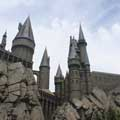
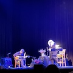

|  |
Winter Break At HogwartsA parser-based puzzle/adventure game set in the world of Harry Potter. |
ArgramsA free, online one-player version of a familiar word tile game. Also available in Spanish, French, and Russian. |
|
Oga's Cantina: Behind The MusicA compendium of information about the music in Oga’s Cantina at Disney’s Galaxy Edge. |
|
Long Strange TripIdentifying the artwork and song versions in the Long Strange Trip documentary. |
|
|  |
Cowboy Junkies, Boston 1989A restoration of the Cowboy Junkies classic 1989 WBCN radio broadcast. |
The Refugees Of CasablancaThe stories of the real-life refugees from the Nazis in the movie Casablanca. |